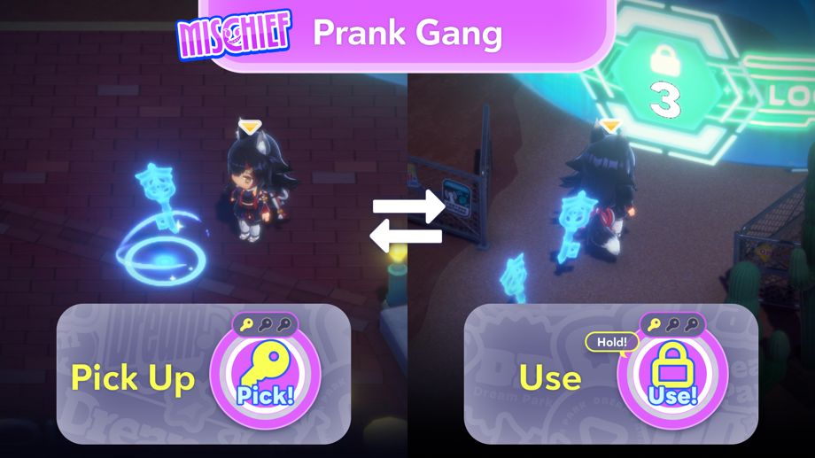

2026-08-28 11:00:00Mini-game baru "Shadowbound Chase" telah dimulai!
◆Tanggal Penambahan Mini-game
2026-08-28 11:00:00〜
◆Persyaratan Partisipasi
Selesaikan Misi Area "Jamuan Gelap, Kejaran Berapi".
Misi Area "Jamuan Gelap, Kejaran Berapi" terbuka setelah menyelesaikan Misi Utama Chapter 1 "Harmony Garden"
*Jika ingin bermain secara Multiplayer di Private Room, selesaikan Misi Utama Chapter 1, Episode 4 "Legenda Yang Terhubung"
Penjelasan mengenai Mini-game baru "Shadowbound Chase"

Shadowbound Chase adalah mini-game di mana dua tim akan berkompetisi. Tim Jahil yang menjadi buronan dan Tim Patroli yang akan menangkap mereka.
Penjelasan Mengenai "Tim Jahil"

Tim Jahil akan menang dengan cara membuka 5 fasilitas sambil dikejar oleh Tim Patroli.
Untuk membuka fasilitas, pemain perlu menggunakan kunci yang ditemukan di sekitar taman.
◆Cara Kontrol
・Mengambil: Tap di dekat kunci untuk mengambil.
・Menggunakan: Ketika berada di dekat fasilitas dan membawa kunci, tekan dan tahan untuk menggunakan kuncinya.
*Tombol akan berubah ketika pemain mendekati fasilitas dengan membawa kunci.
Penjelasan Mengenai "Tim Patroli"

Tim Patroli menang dengan menangkap semua anggota Tim Jahil.
Pemain bisa mengangkap anggota Tim Jahil dengan mendekati mereka dan menekan tombol "Catch".
Selain itu, Tim Patroli juga akan menang jika Tim Jahil gagal untuk membuka 5 fasilitas dalam batas waktu yang diberikan.
Mengenai Menyelamatkan Anggota Tim Jahil

Tim Jahil juga bisa menolong teman-temannya yang tertangkap.
Pemain bisa menyelamatkan anggota yang tertangkap dengan menekan lama tombol "Rescue" didekat mereka.
Mengenai Laser Gimmick Milik Tim Jahil

Tim Jahil bisa mendapatkan keunggulan dengan cara memanfaatkan laser gimmick.
Dengan dinonaktifkan laser gimmick, pemain dapat mengurangi satu buah kunci yang diperlukan untuk membuka setiap fasilitas.
Laser gimmick bisa dinonaktifkan dengan menginjak switch yang ada di depan.
Terdapat 2 switch, dan switch tersebut akan dinonaktifkan lebih cepat jika dua orang berdiri bersamaan di switch tersebut.
Penjelasan Mengenai skill Tim Patroli

Tim Patroli bisa menggunakan skill.
Ada tiga tipe skill yang bisa digunakan dan skill tersebut akan diberikan secara acak kepada tiap pemain di Tim Patroli.
◆Penjelasan Skill
・Speed: Meningkatkan kecepatan bergerak.
・Radar: Bisa melacak lokasi Tim Jahil yang ada di sekitar.
・Stealth: Menjadi semi transparan, membuat Tim Jahil sulit melihat pemain.
*Skill hanya bisa aktif dalam waktu yang terbatas.
*Setelah digunakan, Skill tidak bisa digunakan sampai gauge-nya kembali penuh.
Mengenai Hadiah

Pemain akan tetap mendapatkan hadiah menang ataupun kalah.
Hadiah yang akan didapatkan adalah Koin Harmony Garden.
Koin Harmony Garden bisa ditukarkan dengan berbagai item di NePoLaBo Mart.
Catatan Penting
・Konten dan periode event dapat berubah sewaktu-waktu.